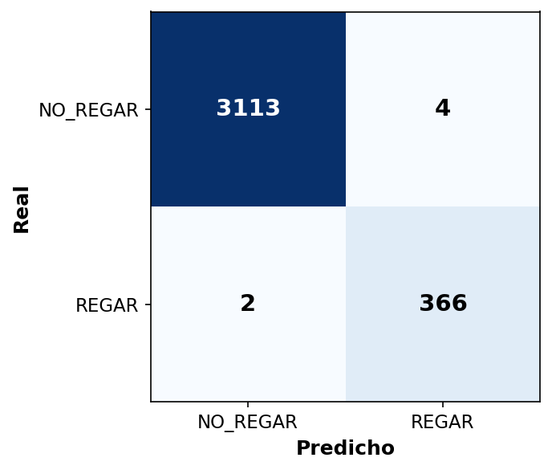

IA Aplicada a la Industria 4.0
Sistema IoT Inteligente para Riego de Potreros
Estudiante: Pillaga Zhagñay, Luis Antonio
Docente: Castillo Calvas, Tuesman Daniel
Fecha: Enero 2026
Maestría en Inteligencia Artificial
Aplicada
Agenda
1. Definición del Problema
Contexto: Biblián, Cañar, Ecuador
- Ubicación: Sierra ecuatoriana
- Altitud: ~2,800 msnm
- Actividad: Ganadería de pastoreo
Problemática Identificada
- Sequías estacionales deterioran pastos
- Riego manual sin criterio técnico
- Desperdicio de agua por riego innecesario
- Falta de monitoreo en tiempo real
Objetivo General
Desarrollar un sistema IoT inteligente que automatice las decisiones de riego utilizando Machine Learning y datos climáticos en tiempo real.
Beneficios Esperados
- Reducir consumo de agua hasta 30%
- Mejorar calidad del pasto
- Automatizar decisiones basadas en datos
2. Arquitectura del Sistema
Stack Tecnológico
| Capa | Tecnología | Protocolo |
|---|---|---|
| Simulación | Wokwi + ESP32 | WiFi |
| Mensajería | HiveMQ Cloud | MQTT:8883 |
| Orquestación | Node-RED | HTTP/MQTT |
| ML | Flask + scikit-learn | HTTP:5001 |
| Capa | Tecnología | Protocolo |
|---|---|---|
| Clima | Open-Meteo API | HTTPS |
| Base Datos | InfluxDB Cloud | Flux |
| Industrial | CODESYS + Factory I/O | OPC-UA |
| Dashboard | Grafana Cloud | InfluxDB |
¿Por qué estas tecnologías?
- Costo cero: HiveMQ, InfluxDB, Grafana tienen planes gratuitos
- Seguridad: TLS/SSL en todas las comunicaciones
- Extensible: Posibilidad de integración industrial (OPC-UA)
- Escalable: Arquitectura modular y desacoplada
- Simulación: Wokwi y Factory I/O permiten probar sin hardware
- Tiempo real: Respuesta en segundos
- ML integrado: API REST facilita integración del modelo
3. Modelo de Machine Learning - Datos
Recopilación de Datos
- Fuente: Open-Meteo Historical API
- Ubicación: Biblián, Ecuador
- Período: 2 años (2024-2026)
- Registros: 17,424 horarios
Features (7 variables)
| Variable | Fuente |
|---|---|
humedad_suelo | Sensor (0-100%) |
temperatura | DHT22 (°C) |
humedad_ambiente | DHT22 (%) |
prob_lluvia | Open-Meteo |
precipitacion | Open-Meteo (mm) |
hora, mes | Sistema |
Criterios de Etiquetado (FAO)
| Condición | Decisión |
|---|---|
| Humedad < 20% | REGAR |
| Humedad < 35% y lluvia > 70% | NO_REGAR |
| Humedad < 40% y temp > 25°C | REGAR |
| Humedad < 45% y hora 5-8 AM | REGAR |
| Humedad ≥ 45% | NO_REGAR |
Distribución de Clases
Resultados del Modelo Random Forest
Importancia de Variables
| Variable | Importancia |
|---|---|
| humedad_suelo | 73.7% |
| mes | 10.4% |
| prob_lluvia | 6.5% |
| hora | 4.3% |
| temperatura | 1.9% |
| humedad_ambiente | 1.7% |
| precipitacion | 1.5% |
Matriz de Confusión

4 falsos positivos: regó sin necesidad
2 falsos negativos: no regó cuando debía
Solo 6 errores en 3,485 predicciones
API REST para Predicciones (Flask)
Endpoints
| Método | Endpoint | Función |
|---|---|---|
| POST | /predict | Predicción |
| GET | /model/info | Info modelo |
Request
{"humedad_suelo": 25, "temperatura": 12,
"humedad_ambiente": 60, "precipitacion": 0,
"prob_lluvia": 10, "hora": 7, "mes": 8}
Response
"probabilidad_regar": 0.978,
"confianza": 97.8}
Parámetros Random Forest
n_estimators: 100 árbolesmax_depth: 10 nivelesclass_weight: balancedrandom_state: 42
Ejecución
uv run python 03_api_flask.py
# Servidor en http://localhost:5001
Latencia: ~5ms por predicción
4. Implementación IoT - Wokwi (ESP32)
Hardware Simulado
| Componente | Función | Pin |
|---|---|---|
| ESP32 DevKit | MCU + WiFi | - |
| DHT22 | Temp + Humedad | GPIO 15 |
| Potenciómetro | Humedad suelo | GPIO 34 |
| LED Verde/Rojo | Estado válvula | GPIO 2/4 |
Topics MQTT
pastizal/sensores- Datospastizal/valvula/control- Comandopastizal/prediccion- Decisión ML
Librerías
WiFiClientSecure, PubSubClient, DHTesp, ArduinoJson
Mensaje JSON (sensores)
"temperatura": 11.5,
"humedad_ambiente": 68.0,
"valvula": "OFF"}
Conexión HiveMQ
- Broker: *.hivemq.cloud
- Puerto: 8883 (TLS)
- Intervalo: 3 segundos
Simulador: wokwi.com (gratuito)
Orquestación con Node-RED
Flujos
1. Sensores
ESP32 → InfluxDB
2. Clima
Open-Meteo (30 min)
3. Decisión ML
Flask → ESP32 (1 min)
4. Control Manual
Abrir/Cerrar válvula
5. Exploración: Integración Industrial
Contexto: Se exploró la integración con CODESYS + Factory I/O simulando un tanque de almacenamiento con control de nivel, pensando en sistemas de riego de mayor escala que requieran automatización industrial.
CODESYS (PLC Virtual)
bOrdenRegar: BOOL;
bValvulaDescarga: BOOL;
rNivelTanque: REAL;
END_VAR
Comunicación
- Protocolo: OPC-UA
- Endpoint: opc.tcp://localhost:4840
- Node-RED: opcua-client
Factory I/O (Simulación)
Escena: Level Control (tanque)
Driver: OPC-UA Client
Flujo
Node-RED → OPC-UA → CODESYS → Factory I/O
ML decide "REGAR" → PLC abre válvula → Tanque descarga
Nota: En un sistema real de campo, el ESP32 controlaría directamente la electroválvula sin necesidad de PLC.
6. Visualización y Monitoreo
InfluxDB Cloud
| Measurement | Campos |
|---|---|
| sensores_pastizal | humedad, temp, válvula |
| clima_openmeteo | temp, prob_lluvia |
| decisiones_riego | decision, confianza |
Query Flux
|> range(start: -1h)
|> filter(fn: (r) =>
r._measurement == "sensores_pastizal")
Grafana Cloud
Paneles:
- Gauge: Humedad suelo, Temperatura
- Stat: Estado válvula (ON/OFF)
- Gauge: Prob. lluvia 24h
- Time Series: Histórico + Decisiones
Actualización: Tiempo real (streaming)
7. Resultados y Pruebas
| Escenario | Humedad | Condiciones | Decisión | Confianza |
|---|---|---|---|---|
| Suelo crítico | 15% | Sin lluvia | REGAR | 97.8% |
| Seco + calor | 30% | Temp alta | REGAR | 57.3% |
| Seco + lluvia próxima | 32% | Prob lluvia 85% | NO_REGAR | 94.8% |
| Suelo húmedo | 65% | Normal | NO_REGAR | 99.4% |
| Lloviendo | 55% | Precipitación activa | NO_REGAR | 100% |
Resultado clave: El escenario 3 demuestra ahorro de agua - evita regar cuando va a llover, a diferencia de sistemas basados en reglas simples.
8. Conclusiones
Logros del Proyecto
- Modelo ML: 99.8% accuracy
- IoT: ESP32 + MQTT + Node-RED
- Clima: Open-Meteo API
- Extensión: OPC-UA (interoperabilidad)
- Monitoreo: InfluxDB + Grafana
Aporte Principal
La humedad del suelo (73.7%) es la variable más importante, seguida del mes y prob. lluvia.
Trabajo Futuro
- Hardware real (ESP32 físico)
- Más sensores (luz, viento)
- Modelo LSTM temporal
- App móvil + Alertas
Impacto Esperado
- Ahorro de agua al evitar riegos innecesarios
- Automatización sin intervención manual
Referencias
- FAO. (2006). Evapotranspiración del cultivo. Estudio FAO 56.
- HiveMQ. (2024). MQTT Cloud Broker. docs.hivemq.com
- InfluxData. (2024). InfluxDB Cloud. docs.influxdata.com
- Open-Meteo. (2024). Free Weather API. open-meteo.com
- Grafana Labs. (2024). Grafana. grafana.com/docs
- Wokwi. (2024). ESP32 Simulator. docs.wokwi.com
- scikit-learn. (2024). Random Forest. scikit-learn.org
- CODESYS. (2024). OPC UA. codesys.com
- Real Games. (2024). Factory I/O. factoryio.com